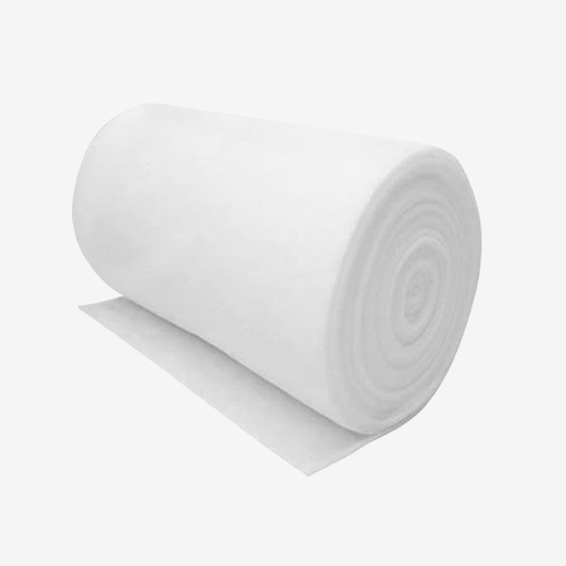

What the grade letters mean, how the old standard maps to the new one, and which grade fits your room.
If you buy air filter media in rolls or finished pads, you have met the letter-and-number code: F5, F7, F9, and more recently ePM1 55% or ISO Coarse 65%. Suppliers often quote the old and new systems side by side without explaining them. Here is what they actually mean — and how to use them when specifying an order.
The F-grades (F5–F9) come from the European standard EN 779, which classified general ventilation filter media by how much of a synthetic dust they captured in a laboratory test. In 2019 EN 779 was withdrawn and replaced by ISO 16890, which grades filters by the share of particles they capture in three size bands:
The percentage after ePM1 (say ePM1 55%) is the share of those particles the filter captures. "ISO Coarse" covers the heavy-dust pre-filtration classes.
Most mills — including ours — still quote both systems because legacy specifications live on in tender documents. This is the correspondence you will see in our typical grades table:
| EN 779 Grade | ISO 16890 Equivalent | Typical Area Weight | Where It Is Used |
|---|---|---|---|
| F5 | ISO Coarse 65% | ≈ 280 g/m² | Pre-filtration, cabinet vents, machine intakes |
| F6 | ePM10 50% | ≈ 300 g/m² | General HVAC, office ventilation |
| F7 | ePM1 55% | ≈ 340 g/m² | Offices, schools, commercial buildings |
| F8 | ePM1 70% | ≈ 360 g/m² | Hospitals, electronics, food processing |
| F9 | ePM1 80% | ≈ 380 g/m² | Clean-room pre-filtration, labs, pharma |
Values are typical industry figures; exact data sheets are supplied with every order.
The most common specification error is jumping straight to F9 "for better air". Every step up the grade ladder costs more and loads the fan with more resistance — and if the fine media is not protected by a coarse pre-filter stage, it will clog in weeks. A well-designed system spends its budget like this:
For spray booths and paint shops, media choice also involves fiber type: synthetic media sheds paint mist without absorbing solvents, while fiberglass media (often with a scrim backing) is preferred for ceiling filtration where even airflow matters more than price.
Specify by duty, not by habit. If your tender still says "F7" alone, quote it as F7 / ePM1 55% and you will get comparable offers from every serious supplier. If you are upgrading an old system, moving the final stage one grade up while protecting it with a proper F5 pre-filter usually delivers cleaner air at lower total cost than simply buying finer media everywhere.
Send us the application and airflow — we will recommend a grade and media type within 24 hours.